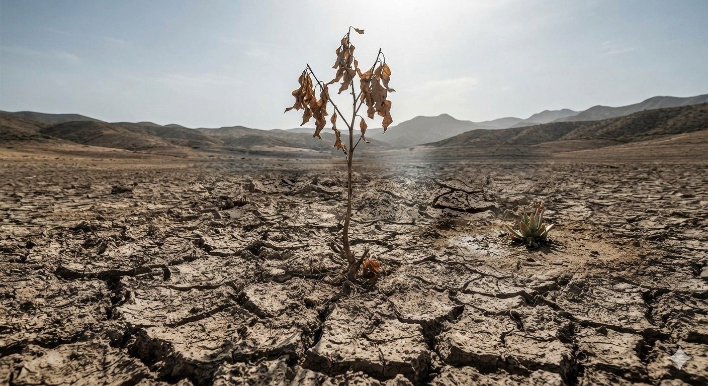

Sin Agua, No hay vida
"El agua vale mucho más que el precio que pagamos por ella: tiene un valor incalculable y sumamente complejo para nuestros hogares,nuestra cultura, nuestra salud, nuestra educación y nuestra economia"
Ver más


"El agua vale mucho más que el precio que pagamos por ella: tiene un valor incalculable y sumamente complejo para nuestros hogares,nuestra cultura, nuestra salud, nuestra educación y nuestra economia"
Ver más


Sello de Calidad Sanitaria 2025 · ASADA Llanos del Molino
Nos abastecemos de un pozo con un caudal concesionado de 3,20 L/s, un tanque elevado de 70 m³ y una red de distribución de más de 1,4 km con 2 hidrantes.
Contamos con un tanque elevado con capacidad de 70 m³, utilizado para almacenar y garantizar la disponibilidad de agua potable para la comunidad.
El permiso sanitario de funcionamiento se encuentra vigente hasta 2028, respaldando la operación del sistema de abastecimiento de agua potable.

Acciones para mantener y proteger nuestro acueducto
Así cuidamos que el agua que llega a su casa sea segura para consumo.
El agua del pozo se desinfecta con hipoclorito de sodio al 12 %, aplicado de forma automática con una bomba dosificadora digital.
Se mide el cloro residual libre en el pozo, el tanque y distintas casas de la red. El valor máximo permitido es 1,0 mg/L.
El tanque de 70 m³ se lava por dentro tres veces al año, y el pozo se lava y limpia cada mes.
Contamos con una red de distribucíon de 1,43 km con 185 abonados y 8 lotes por desarrollar, para un total de 192.